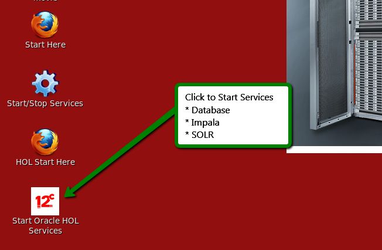

Before you begin: You will need to have Oracle DB, Impala and SOLR running to complete these exercises
Please note: This appliance is for testing and educational purposes only; it is unsupported and not to be used in production.
Oracle BigData Hands On Lab VM provides an integrated environment to help you get started with the Oracle Big Data platform. Many Oracle Big Data platform components have been installed and configured - allowing you to begin using the system right away. The following components are included on Oracle BigData Hands On Lab:
The Hands on Lab can be found at /home/oracle/exercises. The lab guide can be found here.
There is complementary software that you may want to use that is not included in the VM. Simple scripts are provided in /home/oracle/scripts that facilitate installation.
| Component | Details |
|---|---|
| Linux | root/welcome1 oracle/welcome1 |
| Oracle Database 12c | SID: orcl Port: 1521 All passwords: welcome1 moviedemo is the owner of the movie schema |
| Oracle Data Integrator | ODI user name: SUPERVISOR ODI password: welcome1 |
| Oracle NoSQL Database | Start NoSQL DB: Administration Page: |
| Hive Metastore (MySQL) | User name: hive Password: welcome1 |
| Hue | http://localhost:8888 User name: oracle Password: welcome1 |
| Cloudera Manager | http://localhost:7180 User name: admin Password: welcome1 |
| WebLogic | http://localhost:7001/console |
| RStudio (not installed) | http://localhost:8787/ |
| Oracle SQL Developer | Oracle SQL Developer 3.2 and 4.0 Early Adopter are available using the tool bar menu at the top of the screen. |
Oracle has developed numerous demonstrations and hands-on-labs around a fictitious company called "Oracle MoviePlex". Oracle MoviePlex is an on-line movie streaming company. Customers log into Oracle MoviePlex - where they are presented with a targeted list of movies based on their past viewing behavior. Because of this personalized experience and reliable and fast performance, customers spend a lot of money with the company and it has become extremely profitable :).
The Oracle Big Data Platform was used to build this demonstration. All of the software and data required to run the demo and hands-on labs are in this virtual machine. Go to the Oracle Technology Network to access these labs and videos.
Oracle would like to acknowledge the data providers for the movie demo.